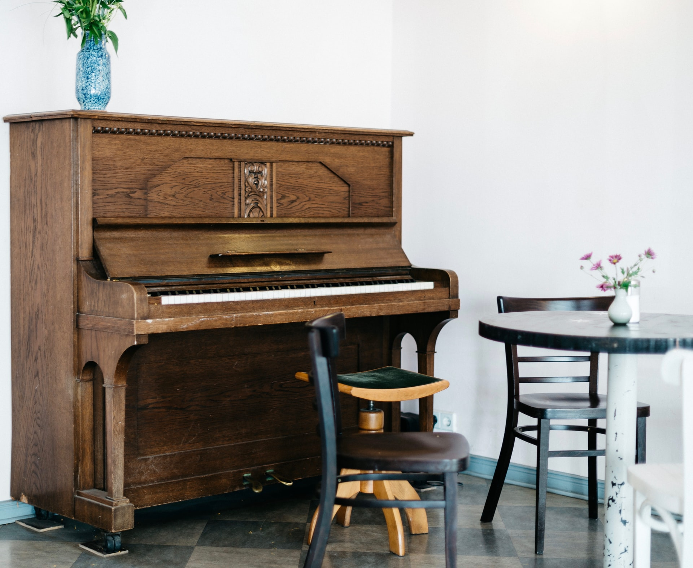
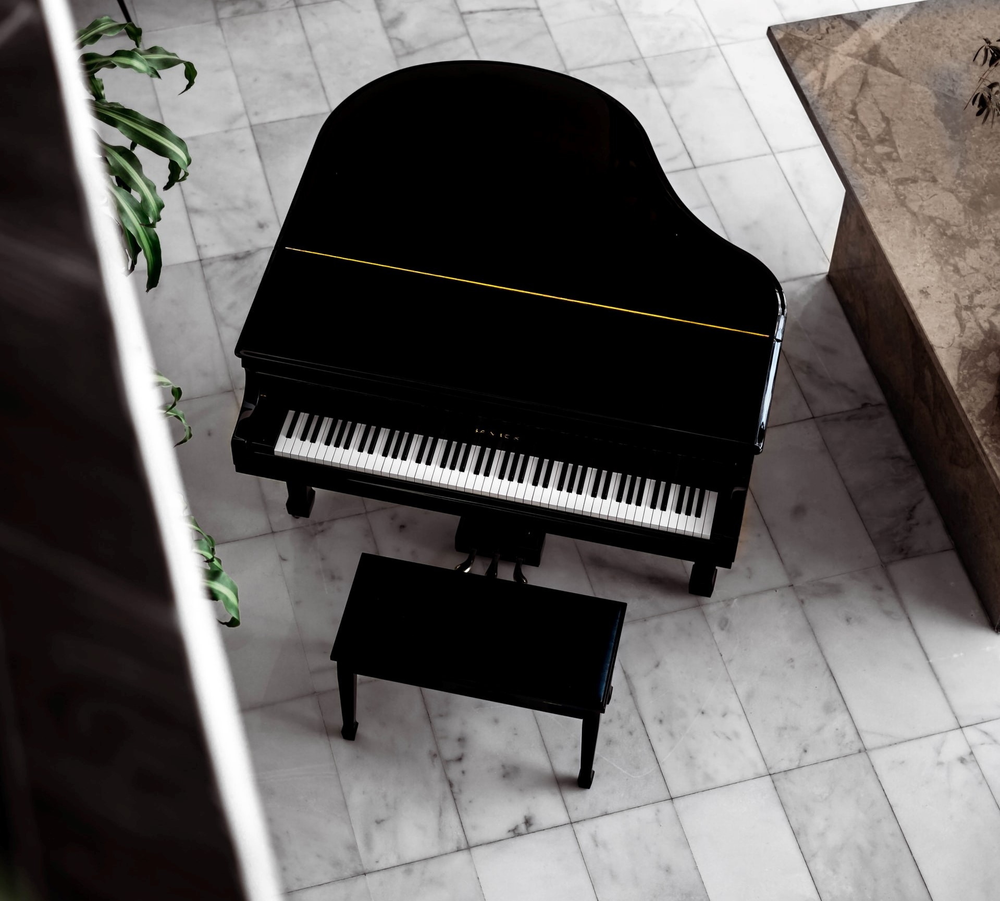

When I was very young, my parents left me and my siblings at home in the care of our older cousin one night. There was a piano in the living room that my great-grandpa helped my parents pay for, and at some point during the night, my cousin sat down and started playing Waterfall by Jon Schmidt. I remember just standing there listening to the beautiful song, and after she was finished, I asked her if she could show me how to play a song on the piano…so she taught me how to play Mary Had a Little Lamb and Twinkle Twinkle Little Star. Not long after, my parents put me in piano lessons, which I continued for about 10 years until the end of my senior year of high school. I still like to play songs occasionally, and I’ve listed a few of my favorite ones below.
This is a Coldplay song, and it is in the key of A♭ major with 4 flats, B E A D. This was the first song by Coldplay that I learned to play on the piano, and it's one of the only songs I can still play without looking at the music. There's a lot of repeat signs in the sheet music, which is nice for memorization because you just memorize the one part and you play it multiple times throughout the whole song. I have to really stretch my right hand to reach some of the chords in this song, but it's really fun to play!
This song is an instrumental song by Brian Crain. It is in the key of D minor, which has one B♭. It switches to C major a couple times in the song by putting natural signs on the B notes, which is fun to play because the feeling of the song goes from feeling melancholy to having a more joyful tone. The reason I chose to play this song is because I heard it on Spotify when I was looking for some instrumental music to listen to while I was doing homework. This one really stood out to me, so I looked around and was able to buy some sheet music for the song.
This song is by Randall Hartsell, and it's in the key of C major, but there are lots of accidentals that give some of the phrases a minor sound. It is a pretty short song, only two pages, but flows nicely and is fun to play. The base sound for the music is mezzo piano, so it is a fairly soft song, but there are lots of crescendos and decrescendos that give the song more feeling as it goes along.
This song is by Laura Weed, and it starts out in the key of A minor, but has several key changes throughout the song (6, to be exact). I don't actually know this whole song, but I really like the first couple pages that I do know, and sometime I want to learn the rest of the song.

This is an upright piano. These are a lot more common than grand pianos because they are cheaper and smaller, so more people can have a piano in their homes because they don't take up a lot of room like grand pianos do.
This is a baby grand piano. This is a smaller version of a grand piano, which is a lot longer on the back end of the instrument. It's cheaper than a grand piano, but more expensive than an upright piano. Because of the cost and their larger size, they are not as common in the average person's home, but more so in concert halls and similar places.
